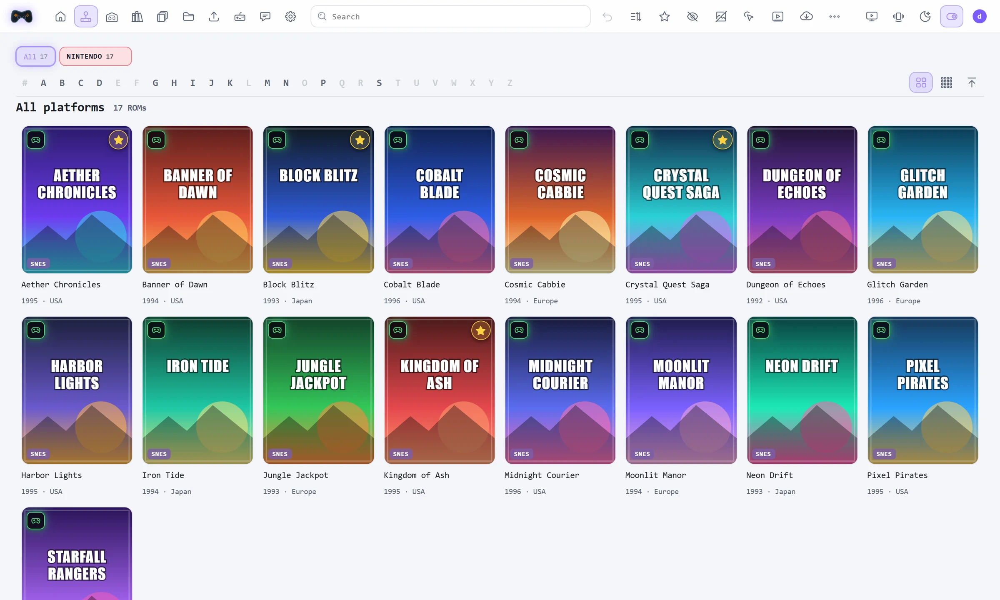

Analyse vos dossiers sur place
Indiquez-lui les dossiers que vous avez déjà. Les fichiers sont répertoriés là où ils sont et ne sont jamais déplacés, renommés ni supprimés, et un fichier défectueux n'interrompt jamais une analyse.
Gratuit · open source · auto-hébergé
game-sauce répertorie les jeux que vous possédez, récupère les jaquettes, fait tourner beaucoup d'entre eux dans votre navigateur, lance les autres dans les émulateurs de votre PC, et affiche toute la bibliothèque sur la télé avec un Grand écran piloté à la manette.
Windows · macOS (Apple silicon) · Linux · Docker, Unraid et Proxmox · Raspberry Pi

Les captures d'écran utilisent les données de démonstration intégrées, avec des jaquettes générées.
Un seul endroit pour la bibliothèque de toute la maison, sur une machine que vous contrôlez.
Indiquez-lui les dossiers que vous avez déjà. Les fichiers sont répertoriés là où ils sont et ne sont jamais déplacés, renommés ni supprimés, et un fichier défectueux n'interrompt jamais une analyse.
Jaquettes, descriptions, années et plus encore depuis ScreenScraper, TheGamesDB, IGDB et SteamGridDB avec vos propres comptes, ou importez des illustrations depuis des dossiers et envoyez les vôtres.
De nombreuses consoles anciennes tournent directement depuis une page web, avec les états sauvegardés et les sauvegardes de jeu conservés par personne sur votre serveur. Une ligne Continuer à jouer se souvient d'où vous en étiez.
Un clic lance un jeu dans l'émulateur installé sur votre propre ordinateur, comme RetroArch, MAME ou Dolphin. Les jeux peuvent être gardés pour un relancement rapide, et une page de configuration règle chaque émulateur.
Une vue plein écran pilotée à la manette pour le canapé : une roue de jeux avec logos et bannières, favoris et collections, une barre de A à Z, des manuels à l'écran et des sons que vous pouvez couper.
Favoris, collections privées et jeux masqués, ainsi que des comptes pour les personnes de confiance, y compris des comptes « jeu uniquement » sans téléchargement ni administration.
Vérifiez vos dumps avec les DAT No-Intro et Redump, trouvez les versions en double et proposez la meilleure copie à garder, et nettoyez les fichiers d'illustrations inutilisés, sans supprimer vos jeux.
Importez votre bibliothèque Steam avec les heures jouées, et vos jeux PlayStation, Nintendo et Xbox depuis une liste. Suivez aussi les disques et cartouches que vous possédez physiquement, le tout à côté de vos ROM.
Pas de compte, pas d'abonnement, pas de cloud. Votre bibliothèque et ses données restent sur votre matériel, dans une base de données que vous pouvez sauvegarder et restaurer depuis l'application.
Deux courts extraits de la bibliothèque de démonstration intégrée.
Une vue plein écran conçue pour une manette et un canapé. Ouvrez-la depuis la bibliothèque d'un clic, et passez le navigateur ou l'application de bureau en plein écran sur la télé.


Une étagère de jaquettes plein écran sur un arc doux. Choisissez une famille et une plateforme, faites défiler avec les flèches, la molette, un balayage ou une manette, et appuyez sur jouer.
Répertoriez les jeux en boîte de votre vraie étagère, à la main ou depuis une liste, à côté de votre collection numérique. Chaque personne a sa propre étagère.
Looks Classique et Moderne, clair et sombre. La même bibliothèque, à votre goût.




Choisissez ce qui vous convient. Chacun prend quelques minutes.
Téléchargez l'application de bureau ou la version portable pour Windows, macOS ou Linux. Rien d'autre à installer : pas de serveur, pas de Docker, aucun réglage à modifier.
Télécharger la dernière versionLancez-le avec Docker, sur Unraid ou dans un conteneur Proxmox, et utilisez-le depuis tous les appareils de la maison. Le guide de déploiement donne les étapes.
Lire le guide de déploiementAu premier démarrage, le compte qui a été créé pour vous s'affiche une seule fois. Notez-le et changez le mot de passe dans les Réglages. Si vous l'exposez à Internet, placez-le derrière un VPN ou un proxy inverse avec HTTPS.
Non. game-sauce sert à gérer les jeux que vous possédez. Il n'inclut ni ne fournit de jeux ni de fichiers BIOS, et ne télécharge pas de jeux pour vous : vous apportez votre propre collection. Pour jouer, le jeu dans le navigateur repose sur EmulatorJS, un émulateur open source que votre navigateur charge quand vous appuyez sur Jouer. Pour jouer sur votre PC, la page Émulateurs recommande des émulateurs et indique où les obtenir, et le lanceur démarre ceux que vous installez vous-même.
Oui. Il est open source sous licence MIT. Il n'y a aucun compte à créer, aucun abonnement et aucun suivi. Certains fournisseurs de métadonnées vous demandent de créer votre propre compte gratuit pour utiliser leur service.
De nombreuses consoles anciennes qui n'ont pas besoin de BIOS fonctionnent depuis une page web. Les systèmes plus récents, et tout ce qui demande plus que ce qu'un navigateur peut offrir, démarrent plutôt dans un émulateur sur votre PC via le lanceur.
Pas dans les dossiers que vous lui indiquez. Il les lit là où ils sont et ne déplace, ne renomme ni ne supprime jamais les fichiers qui s'y trouvent. Les outils de nettoyage ne touchent que les illustrations et les fichiers que game-sauce a stockés lui-même.
Oui. Créez des comptes pour les personnes de confiance. Les collections sont privées pour celui qui les a créées, et les comptes « jeu uniquement » ne voient que les jeux jouables dans le navigateur.
Ouvrez un ticket ou une discussion sur GitHub, ou écrivez à hello@gamesauce.app. La page Santé du système dans les Réglages produit un rapport à copier-coller, sans aucun secret.
game-sauce est gratuit et open source. Si vous le trouvez utile, vous pouvez m'offrir un café. Cela m'aide à consacrer plus de temps aux nouvelles fonctionnalités, aux tests sur Windows, Mac et Linux, et aux réponses à vos questions.